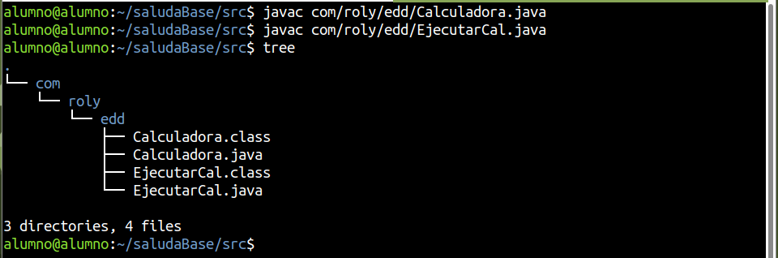

Activitat - Herramientas de automatización
Crea una classe anomenada Calculadora en un paquet format pel teu nom (per exemple com.jose.edd) amb els següents mètodes (funcions):
- public static int suma(int a, int b): Que suma a i b i retorna el resultat,
- public static int resta(int a, int b): Que resta a i b i retorna el resultat,
- public static int multiplica(int a, int b): Que multiplica a i b i retorna el resultat,
- public static int divideix(int a, int b): Que divideix a entre b i retorna el resultat. Si b és 0, mostra l'error i torna un 0.
I una altra classe que a la funció principal faça ús d'aquestes funcions, i mostre els resultats per pantalla.
Crea el directori build, i fes ús d'aquest com a classpath.
Indica a un fitxer Markdown el procés que has seguit, incloent el codi font, les ordres per compilar i per executar, i l'estructura de carpetes resultant. Fes una breu explicació de cada cosa.
Herramientas de automatización - java, javac
Crear fichero y comprobar la estructura de carpetas
mkdir -p saludaBase/src/com/roly/edd
tree saludaBase/

Archivos java
Creamos dos ficheros, uno el programa y otro aquel que maneja la interacción con el usuario y utiliza la lógica definida por el otro fichero java.

Archivos javas:
-
Calculadora.java
- Contiene métodos estáticos para realizar las operaciones matemáticas (sumar, restar, multiplicar, dividir).
- Proporciona métodos reutilizables que realizan cálculos.
- Código:
package com.roly.edd;
public class Calculadora {
public static int sumar(int a, int b) {
return a + b;
}
public static int restar(int a, int b) {
return a - b;
}
public static int multiplicar(int a, int b) {
return a * b;
}
public static double dividir(int a, int b) {
if (b == 0) throw new ArithmeticException("No se puede dividir por 0");
return (double) a / b;
}
}
-
EjecutarCal.java:
- Gestiona la interacción con el usuario: solicita datos, recibe el operador, y utiliza los métodos de
Calculadorapara realizar cálculos, mostrando los resultados. - Código:
- Gestiona la interacción con el usuario: solicita datos, recibe el operador, y utiliza los métodos de
package com.roly.edd;
import java.util.InputMismatchException;
import java.util.Scanner;
public class EjecutarCal {
static Scanner teclat = new Scanner(System.in);
public static void main(String[] args) {
try {
System.out.println("Dime dos valores: ");
int a = teclat.nextInt();
int b = teclat.nextInt();
teclat.nextLine();
System.out.println("Dime un operador (+, -, *, /): ");
char operador = teclat.nextLine().charAt(0);
switch (operador) {
case '+':
System.out.println("Suma: " + a + " + " + b + " = " + Calculadora.sumar(a, b));
break;
case '-':
System.out.println("Resta: " + a + " - " + b + " = " + Calculadora.restar(a, b));
break;
case '*':
System.out.println("Multiplicación: " + a + " * " + b + " = " + Calculadora.multiplicar(a, b));
break;
case '/':
System.out.println("División: " + a + " / " + b + " = " + Calculadora.dividir(a, b));
break;
default:
System.out.println("Operador no válido");
}
} catch (InputMismatchException e) {
System.out.println("Error en la entrada de datos");
} catch (ArithmeticException e) {
System.out.println(e.getMessage());
}
}
}
Compilar java
Ejecutaremos javac para compilar el código fuente Java y generar los archivos .class, que contiene el bytecode, la cual es el formato para que la máquina (JVM) pueda entender y ejecutar.
Nos situaremos en un directorio más arriba, como en saludaBase/src.
javac com/roly/edd/Calculadora.java
javac com/roly/edd/EjecutarCal.java
tree

Ejecución del programa
- La JVM carga el archivo
EjecutarCal.classdesde la estructura de paquetescom.roly.edd.xxx. - Interpreta el bytecode y comienza la ejecución desde el método
maindel archivoEjecutarCal.java.
- El programa interactúa con el usuario según lo definido en el código fuente.
Ejemplo de ejecución del código.
java com.roly.edd.Ejecutar.Cal
Classpath y destino de la compilación
Crear directorio “build”
Crearemos la carpeta “build” y comprobaremos la estructura del directorio.

Compilación dirigida con estructura
javac -d build/ src/com/roly/edd/Calculadora.java
El comando compila el código fuente ubicado en “src/com/roly/edd/Calculadora.java” y genera el archivo “.class” (bytecode) en una carpeta específica (build/). Esto hace que la estructura del paquete (com/alumno/edd) se replique automáticamente dentro de la carpeta build.
- La opción -d especifica el directorio de salida donde se colocarán los archivos compilados .class
Ejecución del comando y comprobar la estructura

Compilación con dependencias
javac -d build -classpath build src/com/roly/edd/EjecutarCal.java
El comando compila el archivo EjecutarCal.java desde la carpeta src/com/roly/edd/ y coloca su archivo .class en la carpeta build.
- La opción
-classpath buildle indica al compilador dónde buscar las clases ya compiladas (comoCalculadora.class), necesarias para que el programa funcione.

Estructura completa
tree saludaBase/

Ejecutar código
java -cp build/ com.roly.edd.EjecutarCal
Ejecutamos el programa Java especificando en la clase EjecutarCal, situada en el paquete com.roly.edd.
-cp (o --class-path)indica el directorio donde la JVM debe buscar las clases compiladas. En este caso, build/ es el directorio donde se encuentran los archivos .class generados por javac.